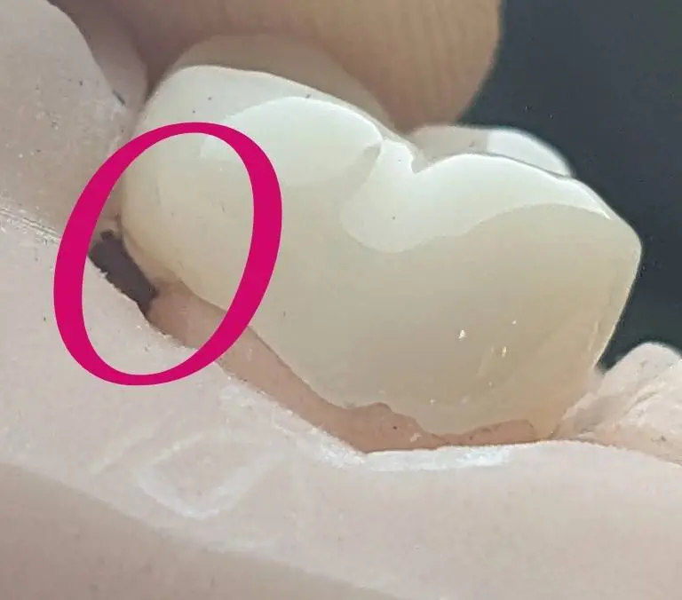

نسخه استخراجشده؛ ترجمه یا تأیید علمی انجام نشده است. وضعیت: captured
روکش سرامیکی از لابراتوار رسیده است. روی کست پرینتشده نگاهش میکنی: محل مارجینها درست تطابق ندارد، و در امبرژر سطح روکش مقعر طراحی شده است. تحویلش میدهی؟

در امبرژرها و هر ناحیهای که روکش با بافت نرم تماس دارد، کانتور باید محدب یا دستکم هموار باشد. سطح محدب مسیر عبور غذا و حرکت مسواک و نخ را باز نگه میدارد و بافت را با فشاری ملایم به شکل خود میخواباند؛ تورفتگی در این نواحی هیچ توجیه طراحی ندارد.
سطح مقعر گودالی میسازد که غذا و پلاک در آن میماند؛ نه زبان پاکش میکند و نه مسواک به آن میرسد، و کنترل بهداشت برای بیمار سخت میشود. نتیجهی درازمدت: التهاب لثه و مشکلات پریودنتال. مارجین قابل قبول این خطر را جبران نمیکند؛ کانتور معیاری مستقل از مارجین است.
ارزیابی روکش پیش از تحویل یک بازرسی چندمعیاره است: تطابق مارجین روی کست، و به همان جدیت، کانتور سطوحی که با بافت تماس دارند. این روکش بهخاطر کانتور مقعر و تطابق نداشتن مارجینها روی کست، بهجای تحویل به بیمار برای اصلاح و ساخت دوباره به لابراتوار برگشت. هزینهی یک رفتوبرگشت لابراتواری از هزینهی التهاب مزمن و دوبارهکاری در دهان کمتر است.
روکش را امتحان میکنی و راک واضحی دارد؛ دیوارههای روکش با دیوارههای تراش تماس ندارند. مطمئنی تراش صحیح است و فرم رزیستنس دارد. اول سراغ چه میروی؟
راکداشتن روکش علتهای مختلفی دارد و همیشه به تراش یا ساخت مربوط نیست. وقتی مطمئنی تراش صحیح است و فرم رزیستنس وجود دارد، باید مرحلهبهمرحله جلو بروی: همیشه قبل از امتحان روکش، اولین مرحله بررسی کانتکتهاست. کانتکتها عاملی بیرون از خود تراش و ساخت روکشاند: اولین فاکتور خارجی که میتواند مانع نشستن کامل روکش شود.
تا این عامل خارجی برطرف نشود، قضاوت دربارهی طراحی، فضای سمان یا دقت ساخت معنی ندارد. در همین کیس، با تنظیم کانتکت دیستال روکش کامل نشست، تماس دیوارهها برقرار شد و راک کاملاً از بین رفت.
راکداشتن روکش همیشه به تراش یا ساخت مربوط نیست؛ قبل از هر قضاوتی، بررسی کانتکتها بهعنوان اولین عامل خارجی ضروری است.